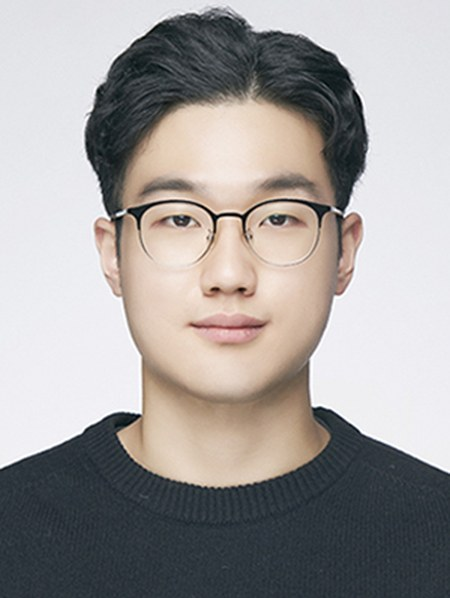

2026.09 – 현재
컴퓨터공학부 학석사연계과정
한성대학교 · PRISM Lab

한성대학교 컴퓨터공학부 학석사연계과정 학생이며 PRISM Lab에서 연구하고 있습니다. AI가 사용자의 선호를 더 잘 이해하고 개인화하는 방법을 연구하며, 자연어 처리와 멀티모달 학습에 집중하고 있습니다. 최근에는 LLM과 LLM 기반 에이전트를 추천에 활용해, 기존의 순위 기반 추천을 넘어 생성형·대화형·설명 가능한 추천으로 나아가는 방향을 탐구하고 있습니다.
dbtjdwo811@hansung.ac.kr
서울 한성대학교 PRISM Lab (504호)